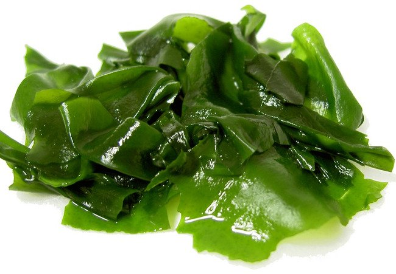

Dislike
버섯

버섯은 자루와 갓이 있는 균사체를 말한다. 보통 담자균과 대형 자낭균을 말한다. 가끔 식용 가능한 지의류를 말하기도 한다.
콩
콩은 음식이나 사료로 쓰이는 콩과(학명: Fabaceae, 구 명칭은 Leguminosae) 식물의 두과이다. 미국에서는 "legumes", 영국에서는 "pulse"로도 알려져 있다. 콩(Glycine max) 한 종만을 가리키는 말로도 쓰인다.
미역

미역(학명: Undaria pinnatifida)은 바다에서 서식하는 미역과의 갈조류이다. 식물과 유사하지만, 분류상으로는 식물이 아니라 원생생물에 속한다. 무기질, 비타민 및 섬유질 성분, 점질성 다당류, 아이오딘을 함유하고 있어 식용된다.